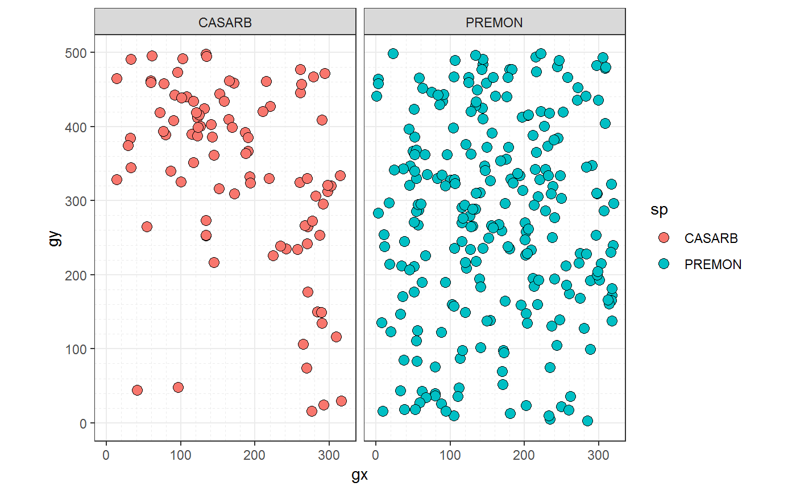
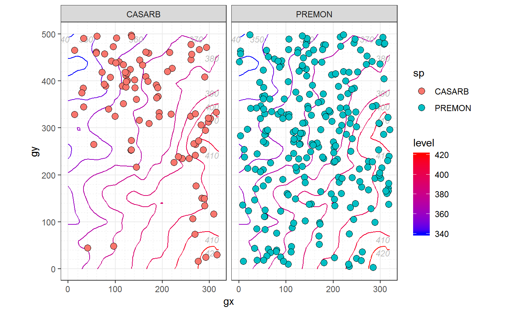

Analyze forest diversity and dynamics
Analyze forest diversity and dynamicsfgeo helps you to install, load, and access the documentation of multiple packages to analyze forest diversity and dynamics. It allows you to manipulate and plot ForestGEO data, and to do common analyses including abundance, demography, and species-habitats associations.
Installation
Expected R environment
- R version is recent
- All packages are updated (run
update.packages()) - No other R session is running
- Current R session is clean (click Session > Restart R)
Install the latest stable version of all fgeo packages with:
these_repos <- c(getOption("repos"), "https://forestgeo.github.io/drat")
install.packages("fgeo", repos = these_repos)Or install the development version of all fgeo packages with:
- To remove packages see
?remove.packages()
Tips to avoid or fix common installation problems
Instruct RStudio not to preserve your workspace between sessions
In RStudio go to Tools > Global Options…


Restart R many times each day
Press Cmd/Ctrl + Shift + F10 to restart RStudio or go to Session > Restart R.
Prepare your system to build packages from source
Sometimes you may need to install the source version of an R package (e.g. from CRAN or GitHub).
Troubleshoot: error: X11 library is missing: install XQuartz …
If you are a mac user, fgeo.krig may fail to install with the error below. Install XQuartz from https://www.xquartz.org/ and try to install fgeo.krig again.
Example
Explore fgeo
On an interactive session, fgeo_help() and fgeo_browse_reference() help you to search documentation.
if (interactive()) {
# To search on the viewer; accepts keywords
fgeo_help()
# To search on a web browser
fgeo_browse_reference()
}Access and manipulate data
example_path() allows you to access datasets stored in your R libraries.
example_path()
#> [1] "csv" "mixed_files" "rdata" "rdata_one"
#> [5] "rds" "taxa.csv" "tsv" "vft_4quad.csv"
#> [9] "view" "weird" "xl"
(vft_file <- example_path("view/vft_4quad.csv"))
#> [1] "C:/Users/LeporeM/Documents/R/win-library/3.5/fgeo.x/extdata/view/vft_4quad.csv"
read_<table>()
read_vft() and read_taxa() import a ViewFullTable and ViewTaxonomy from .tsv or .csv files.
read_vft(vft_file)
#> # A tibble: 500 x 32
#> DBHID PlotName PlotID Family Genus SpeciesName Mnemonic Subspecies
#> <int> <chr> <int> <chr> <chr> <chr> <chr> <chr>
#> 1 385164 luquillo 1 Rubia~ Psyc~ brachiata PSYBRA <NA>
#> 2 385261 luquillo 1 Urtic~ Cecr~ schreberia~ CECSCH <NA>
#> 3 384600 luquillo 1 Rubia~ Psyc~ brachiata PSYBRA <NA>
#> 4 608789 luquillo 1 Rubia~ Psyc~ berteroana PSYBER <NA>
#> 5 388579 luquillo 1 Areca~ Pres~ acuminata PREMON <NA>
#> 6 384626 luquillo 1 Arali~ Sche~ morototoni SCHMOR <NA>
#> 7 410958 luquillo 1 Rubia~ Psyc~ brachiata PSYBRA <NA>
#> 8 385102 luquillo 1 Piper~ Piper glabrescens PIPGLA <NA>
#> 9 353163 luquillo 1 Areca~ Pres~ acuminata PREMON <NA>
#> 10 481018 luquillo 1 Salic~ Case~ arborea CASARB <NA>
#> # ... with 490 more rows, and 24 more variables: SpeciesID <int>,
#> # SubspeciesID <chr>, QuadratName <chr>, QuadratID <int>, PX <dbl>,
#> # PY <dbl>, QX <dbl>, QY <dbl>, TreeID <int>, Tag <chr>, StemID <int>,
#> # StemNumber <int>, StemTag <int>, PrimaryStem <chr>, CensusID <int>,
#> # PlotCensusNumber <int>, DBH <dbl>, HOM <dbl>, ExactDate <date>,
#> # Date <int>, ListOfTSM <chr>, HighHOM <int>, LargeStem <chr>,
#> # Status <chr>Importing multiple censuses from a directory into a list
(This and the following section don’t use fgeo because other packages already do this well.)
Combine fs::dir_ls() with purrr::map() to import multiple censuses from a directory into a list:
- Use
fs::dir_ls()to create the paths to the files you want to import. - Use
purrr::map()to iterate over each path and apply a custom function to import them.
library(purrr)
library(fs)
(rdata_files <- example_path("rdata"))
#> [1] "C:/Users/LeporeM/Documents/R/win-library/3.5/fgeo.x/extdata/rdata"
(paths <- fs::dir_ls(rdata_files))
#> C:/Users/LeporeM/Documents/R/win-library/3.5/fgeo.x/extdata/rdata/tree5.RData
#> C:/Users/LeporeM/Documents/R/win-library/3.5/fgeo.x/extdata/rdata/tree6.RData
# The formula syntax `~ fun(.x)` is a shortcut for `function(.x) fun(.x)`
censuses <- map(paths, ~ get(load(.x)))
censuses
#> $`C:/Users/LeporeM/Documents/R/win-library/3.5/fgeo.x/extdata/rdata/tree5.RData`
#> # A tibble: 3 x 19
#> treeID stemID tag StemTag sp quadrat gx gy MeasureID CensusID
#> <int> <int> <chr> <chr> <chr> <chr> <dbl> <dbl> <int> <int>
#> 1 104 143 10009 10009 DACE~ 113 10.3 245. 439947 5
#> 2 119 158 1001~ 100104 MYRS~ 1021 183. 410. 466597 5
#> 3 180 225 1001~ 100174 CASA~ 921 165. 410. 466623 5
#> # ... with 9 more variables: dbh <dbl>, pom <chr>, hom <dbl>,
#> # ExactDate <date>, DFstatus <chr>, codes <chr>, nostems <dbl>,
#> # status <chr>, date <dbl>
#>
#> $`C:/Users/LeporeM/Documents/R/win-library/3.5/fgeo.x/extdata/rdata/tree6.RData`
#> # A tibble: 3 x 19
#> treeID stemID tag StemTag sp quadrat gx gy MeasureID CensusID
#> <int> <int> <chr> <chr> <chr> <chr> <dbl> <dbl> <int> <int>
#> 1 104 143 10009 10009 DACE~ 113 10.3 245. 582850 6
#> 2 119 158 1001~ 100104 MYRS~ 1021 183. 410. 578696 6
#> 3 180 225 1001~ 100174 CASA~ 921 165. 410. 617049 6
#> # ... with 9 more variables: dbh <dbl>, pom <chr>, hom <dbl>,
#> # ExactDate <date>, DFstatus <chr>, codes <chr>, nostems <dbl>,
#> # status <chr>, date <dbl>Exporting multiple censuses from a list into a directory
- Use
purrr::walk2()to map over two things in parallel – each census to each path to a file. It is similar topurrr::map2()andbase::Map()but prints nothing to the console.
(files <- path_file(names(censuses)))
#> tree5.RData tree6.RData
(folder <- tempdir())
#> [1] "C:\\Users\\LeporeM\\AppData\\Local\\Temp\\1\\RtmpyGVa3O"
(paths <- path(folder, files))
#> C:/Users/LeporeM/AppData/Local/Temp/1/RtmpyGVa3O/tree5.RData
#> C:/Users/LeporeM/AppData/Local/Temp/1/RtmpyGVa3O/tree6.RData
walk2(censuses, paths, ~ save(.x, file = .y))
# Confirm that the folder contains the files we just saved
path_file(dir_ls(folder, regexp = "tree"))
#> tree5.RData tree6.RData
pick_<what>() and drop_<what>()
fgeo is pipe-friendly. You may not use pipes but often they make code easier to read.
Use %>% to emphasise a sequence of actions, rather than the object that the actions are being performed on.
– https://style.tidyverse.org/pipes.html
pick_dbh_under(), drop_status() and friends pick and drop rows from a ForestGEO ViewFullTable or census table.
(census <- censuses[[2]])
#> # A tibble: 3 x 19
#> treeID stemID tag StemTag sp quadrat gx gy MeasureID CensusID
#> <int> <int> <chr> <chr> <chr> <chr> <dbl> <dbl> <int> <int>
#> 1 104 143 10009 10009 DACE~ 113 10.3 245. 582850 6
#> 2 119 158 1001~ 100104 MYRS~ 1021 183. 410. 578696 6
#> 3 180 225 1001~ 100174 CASA~ 921 165. 410. 617049 6
#> # ... with 9 more variables: dbh <dbl>, pom <chr>, hom <dbl>,
#> # ExactDate <date>, DFstatus <chr>, codes <chr>, nostems <dbl>,
#> # status <chr>, date <dbl>
census %>%
pick_dbh_under(100)
#> # A tibble: 2 x 19
#> treeID stemID tag StemTag sp quadrat gx gy MeasureID CensusID
#> <int> <int> <chr> <chr> <chr> <chr> <dbl> <dbl> <int> <int>
#> 1 119 158 1001~ 100104 MYRS~ 1021 183. 410. 578696 6
#> 2 180 225 1001~ 100174 CASA~ 921 165. 410. 617049 6
#> # ... with 9 more variables: dbh <dbl>, pom <chr>, hom <dbl>,
#> # ExactDate <date>, DFstatus <chr>, codes <chr>, nostems <dbl>,
#> # status <chr>, date <dbl>pick_main_stem() and pick_main_stemid() pick the main stem or main stemid(s) of each tree in each census.
add_<column(s)>()
add_status_tree()adds the column status_tree based on the status of all stems of each tree.
stem %>%
select(CensusID, treeID, stemID, status) %>%
add_status_tree()
#> # A tibble: 1,320 x 5
#> CensusID treeID stemID status status_tree
#> <int> <int> <int> <chr> <chr>
#> 1 6 104 143 A A
#> 2 6 119 158 A A
#> 3 NA 180 222 G A
#> 4 NA 180 223 G A
#> 5 6 180 224 G A
#> 6 6 180 225 A A
#> 7 6 602 736 A A
#> 8 6 631 775 A A
#> 9 6 647 793 A A
#> 10 6 1086 1339 A A
#> # ... with 1,310 more rowsadd_index() and friends add columns to a ForestGEO-like dataframe.
stem %>%
select(gx, gy) %>%
add_index()
#> Guessing: plotdim = c(320, 500)
#> * If guess is wrong, provide the correct argument `plotdim`
#> # A tibble: 1,320 x 3
#> gx gy index
#> <dbl> <dbl> <dbl>
#> 1 10.3 245. 13
#> 2 183. 410. 246
#> 3 165. 410. 221
#> 4 165. 410. 221
#> 5 165. 410. 221
#> 6 165. 410. 221
#> 7 149. 414. 196
#> 8 38.3 245. 38
#> 9 143. 411. 196
#> 10 68.9 253. 88
#> # ... with 1,310 more rowsPlot data
For simplicity, we will focus on only a few species.
autoplot() and friends produce different output depending on the class of input. You can create different input classes, for example, with sp() and sp_elev():
- Use
sp(census)to plot the columnspof acensusdataset – i.e. to plot species distribution.

- Use
sp_elev(census, elevation)to plot the columnsspandelevof acensusandelevationdataset, respectively – i.e. to plot species distribution and topography.
data("elevation")
class(sp_elev(stem_2sp, elevation))
#> [1] "sp_elev" "list"
autoplot(sp_elev(stem_2sp, elevation))
Analyze
Demography
recruitment_ctfs(), mortality_ctfs(), and growth_ctfs() calculate recruitment, mortality, and growth. They all output a list. as_tibble() converts the output from a list to a more convenient dataframe.
data("tree5")
as_tibble(
mortality_ctfs(tree5, tree6)
)
#> Detected dbh ranges:
#> * `census1` = 10.9-323.
#> * `census2` = 10.5-347.
#> Using dbh `mindbh = 0` and above.
#> # A tibble: 1 x 9
#> N D rate lower upper time date1 date2 dbhmean
#> <dbl> <dbl> <dbl> <dbl> <dbl> <dbl> <dbl> <dbl> <dbl>
#> 1 27 1 0.00834 0.00195 0.0448 4.52 18938. 20590. 101.Species-habitats association
tt_test() runs a torus translation test to determine habitat associations of tree species. as_tibble() converts the output from a list to a more convenient dataframe. summary() helps you to interpret the result.
# This analysis makes sense only for tree tables
tree <- download_data("luquillo_tree5_random")
data("habitat")
result <- tt_test(tree, habitat)
#> Using `plotdim = c(320, 500)`. To change this value see `?tt_test()`.
#> Using `gridsize = 20`. To change this value see `?tt_test()`.
as_tibble(result)
#> # A tibble: 292 x 8
#> habitat sp N.Hab Gr.Hab Ls.Hab Eq.Hab Rep.Agg.Neut Obs.Quantile
#> * <chr> <chr> <dbl> <dbl> <dbl> <dbl> <dbl> <dbl>
#> 1 1 ALCFLO 2 1443 153 4 0 0.902
#> 2 2 ALCFLO 1 807 778 15 0 0.504
#> 3 3 ALCFLO 0 0 715 885 -1 0
#> 4 4 ALCFLO 0 0 402 1198 -1 0
#> 5 1 ALCLAT 0 0 544 1056 -1 0
#> 6 2 ALCLAT 1 1432 156 12 0 0.895
#> 7 3 ALCLAT 0 0 324 1276 -1 0
#> 8 4 ALCLAT 0 0 144 1456 -1 0
#> 9 1 ANDINE 1 1117 466 17 0 0.698
#> 10 2 ANDINE 1 1081 510 9 0 0.676
#> # ... with 282 more rows
summary(result)
#> # A tibble: 292 x 3
#> sp habitat association
#> <chr> <chr> <chr>
#> 1 ALCFLO 1 neutral
#> 2 ALCFLO 2 neutral
#> 3 ALCFLO 3 repelled
#> 4 ALCFLO 4 repelled
#> 5 ALCLAT 1 repelled
#> 6 ALCLAT 2 neutral
#> 7 ALCLAT 3 repelled
#> 8 ALCLAT 4 repelled
#> 9 ANDINE 1 neutral
#> 10 ANDINE 2 neutral
#> # ... with 282 more rowsR code from recent publications by ForestGEO partners
Data have been made available as required by the journal to enable reproduction of the results presented in the paper. Please do not share these data without permission of the ForestGEO plot Principal Investigators (PIs). If you wish to publish papers based on these data, you are also required to get permission from the PIs of the corresponding ForestGEO plots.
- Soil drivers of local-scale tree growth in a lowland tropical forest (Zemunik et al., 2018).
-
Plant diversity increases with the strength of negative density dependence at the global scale (LaManna et al., 2018)
- Response #1: LaManna et al. 2018. Response to Comment on “Plant diversity increases with the strength of negative density dependence at the global scale” Science Vol. 360, Issue 6391, eaar3824. DOI: 10.1126/science.aar3824
- Response #2: LaManna et al. 2018. Response to Comment on “Plant diversity increases with the strength of negative density dependence at the global scale”. Science Vol. 360, Issue 6391, eaar5245. DOI: 10.1126/science.aar5245
Acknowledgments
Thanks to all partners of ForestGEO for sharing their ideas and code. For feedback on fgeo, special thanks to Gabriel Arellano, Stuart Davies, Lauren Krizel, Sean McMahon, and Haley Overstreet. For all other help, I thank contributors in the the documentation of the features they helped with.